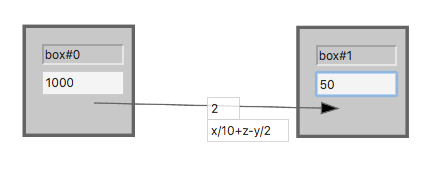

The fluxmodeler is an interactive modeling tool that allows users to build budget models, simulate fluxes, and explore their effects on reservoirs over time.
instructions
- Add boxes by double clicking on the screen.
- Label them by changing the text in the top input box.
- Change their budgets by entering a number in the bottom input box and clicking "enter".
- Label them by changing the text in the top input box.
- Add fluxes by clicking and dragging a line from one box to another.
- Enter a number in the input box and click "enter" to indicate the magnitude of flux. This is the amount of flux moved between boxes in one unit of time.
- Click on the "MOVE" button to drag boxes around.
- Click "►/||" to play or pause the model.
- Click "▉" to stop the model and reset the timer.
- Move the slider to slow down or speed up the model.
In advanced mode, the equation box that appears overrides the flux magnitude box. You can enter common mathematical notations, including ^ (exponents), * (multiplication), / (division), + (addition), - (subtraction), and parenthesis. For more option, see the expression evaluator documentation. Make sure to click "enter" after typing in an equation.
More importantly, you can use the following three variables:
'x' = the value of the source box budget
'y' = the value of the destination box budget
'z' = the value of the flux magnitude box
For example:

This flux would begin at 77 (1000/10 + 2 - 50/2)
examples
Systems that could be modeled using this framework (from Cornell, S., I. C. Prentice, J. House, and C. Downy eds. 2012. Understanding the earth system: global change science for application. Cambridge: Cambridge University Press.):

The above model is easy to implement and shows a slow increase of carbon in the atmosphere over time.

More complex models can be implemented using the advanced equation mode, which allows the introduction of constants and fluxes that are mathematically dependent on reservoir magnitudes.
code
This program is written in javascript with help from p5.js and JavaScript Expression Evaluator.
You can view and fork the source code on the github repo.
Licensed under a Creative Commons license.